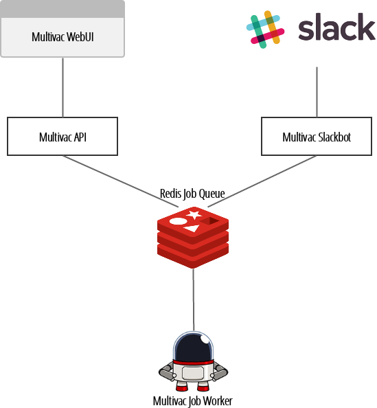

Multivac
Multivac is a ChatOps framework with an integrated job queue, RESTful API, web and CLI interface. Currently ships with builtin support for Slack
@multivac: echo hello
> running
> [Sun Aug 30 18:19:13 2015] hello
All Multivac components use a common Redis instance to communicate with a worker process inside your infrastructure to perform tasks 